Lectures
56 articles sur ce que croit l'Église orthodoxe et pourquoi — écrits pour tous ceux que la question intéresse, et d'abord pour les chrétiens d'autres traditions qui cherchent un exposé clair plutôt qu'une controverse.
Ces pages exposent la position orthodoxe selon ses propres fondements. Elles ne sont écrites contre personne. Là où les orthodoxes diffèrent des autres chrétiens, la différence est dite franchement et les raisons en sont données, afin que le lecteur puisse en juger. Beaucoup s'appuient sur les écrits du père Séraphim Rose (1934–1982), venu à l'orthodoxie d'un milieu protestant, qui affirmait que la dureté envers les autres chrétiens est, selon ses propres mots publiés, « spirituellement fausse », même lorsqu'elle est techniquement juste.
La vie monastique et les anciens
Monastères, obéissance, tonsure et pères spirituels : le monde derrière le livre Everyday Saints.
 L’obéissance dans un monastère orthodoxeCe qu’est l’obéissance monastique, pourquoi les novices commencent à la cuisine, où se situent ses limites, et ce qu’un laïc peut en retirer.7 min de lecture
L’obéissance dans un monastère orthodoxeCe qu’est l’obéissance monastique, pourquoi les novices commencent à la cuisine, où se situent ses limites, et ce qu’un laïc peut en retirer.7 min de lecture Pourquoi devient-on moine ou monialeCe que font réellement moines et moniales, comment les Pères du désert l’ont commencé, ce que sont les trois vœux, et ce que mettent à l’épreuve les années de noviciat.7 min de lecture
Pourquoi devient-on moine ou monialeCe que font réellement moines et moniales, comment les Pères du désert l’ont commencé, ce que sont les trois vœux, et ce que mettent à l’épreuve les années de noviciat.7 min de lecture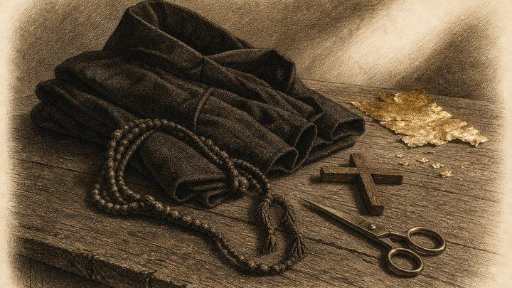
Les étapes de la tonsure monastiqueDu novice au grand schème : ce que signifie chaque étape monastique orthodoxe, ce qui est donné à chacune, et en quoi les degrés monastiques diffèrent des rangs sacerdotaux.7 min de lecturePères spirituels et startsyCe qu’est et n’est pas un starets orthodoxe, comment les pères spirituels guident, et comment choisir un confesseur sans courir après la célébrité.7 min de lecture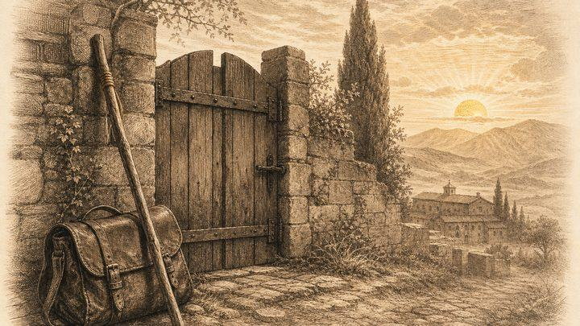
Guide du pèlerinage orthodoxeUn guide pratique du pèlerinage orthodoxe : pourquoi les chrétiens y vont, comment se préparer, comment se comporter dans un monastère, et où aller depuis Singapour.8 min de lectureCulte, prière et vie paroissiale
Bougies, eau bénite, la Divine Liturgie, funérailles, baptême d'adulte et à quoi ressemble un premier dimanche.
 Comment prier : guide du débutantUne introduction pratique et modeste à la prière orthodoxe : la règle quotidienne, la Prière de Jésus, la prière avec ses propres mots, et que faire quand la prière semble aride.7 min de lecture
Comment prier : guide du débutantUne introduction pratique et modeste à la prière orthodoxe : la règle quotidienne, la Prière de Jésus, la prière avec ses propres mots, et que faire quand la prière semble aride.7 min de lecture Pourquoi les orthodoxes allument des ciergesCe que signifie un cierge dans une église orthodoxe, où le placer, que prier, et comment se comporter avec bienveillance dans une paroisse tropicale.7 min de lecture
Pourquoi les orthodoxes allument des ciergesCe que signifie un cierge dans une église orthodoxe, où le placer, que prier, et comment se comporter avec bienveillance dans une paroisse tropicale.7 min de lecture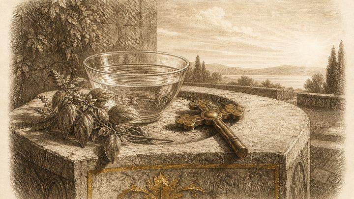
L’eau bénite de la ThéophaniePourquoi l’Église bénit l’eau à la Théophanie, comment les fidèles l’utilisent chez eux, et comment la traiter avec révérence.7 min de lecture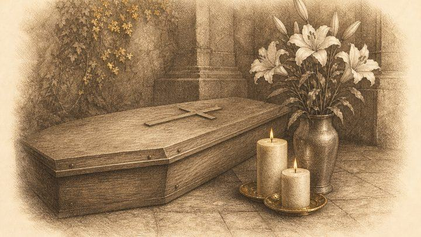
Les funérailles orthodoxesUn guide serein des funérailles orthodoxes, des commémorations qui suivent, et des démarches pratiques qu’une famille peut entreprendre.8 min de lectureLe typikon et les règles de l’ÉgliseCe qu’est le livre orthodoxe des rubriques liturgiques, pourquoi il existe, et comment rigueur et miséricorde œuvrent ensemble dans la vie de l’Église.8 min de lecture Un autel, une liturgiePourquoi les églises orthodoxes célèbrent normalement une liturgie par jour sur un autel, et ce que l’antimension, la concélébration et l’évêque ont à y voir.8 min de lecture
Un autel, une liturgiePourquoi les églises orthodoxes célèbrent normalement une liturgie par jour sur un autel, et ce que l’antimension, la concélébration et l’évêque ont à y voir.8 min de lecture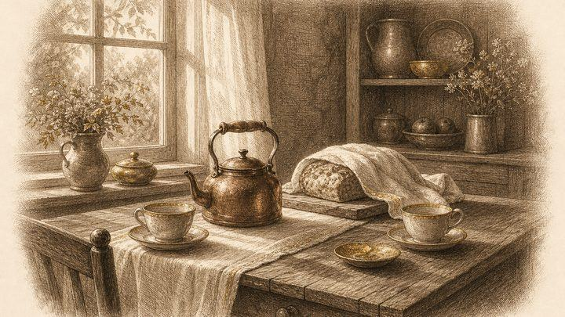
L’épouse du prêtre : la matouchkaPourquoi les prêtres orthodoxes peuvent se marier, comment on appelle l’épouse du prêtre selon les traditions, ce qu’elle fait, et comment une paroisse peut soutenir une famille de clerc.8 min de lectureComment devenir orthodoxeUn guide pas à pas pour les adultes qui souhaitent devenir orthodoxes : première visite, catéchuménat, baptême ou chrismation, parrains, nouveau nom et première année.8 min de lecture Votre premier dimanche dans une église orthodoxeUn guide calme et pratique de la Liturgie dominicale, de la station debout, des cierges et des icônes, de la communion, et de la vie d’une paroisse orthodoxe comme famille.8 min de lecture
Votre premier dimanche dans une église orthodoxeUn guide calme et pratique de la Liturgie dominicale, de la station debout, des cierges et des icônes, de la communion, et de la vie d’une paroisse orthodoxe comme famille.8 min de lectureSaints, anges et l'Église dans l'histoire
Ce qui fait un saint, les fous pour le Christ, le monde invisible et l'Église sous la persécution.
 Les anges gardiens dans l’orthodoxieCe que disent l’Écriture, les Pères et les prières de l’Église sur les anges gardiens, comment demander leur aide, et ce que les anges ne sont pas.7 min de lectureSaint Tikhon de MoscouLa vie du patriarche Tikhon : évêque missionnaire en Amérique, premier patriarche de Moscou en 1917, confesseur sous le régime soviétique, et saint de toute l’Église.8 min de lecture
Les anges gardiens dans l’orthodoxieCe que disent l’Écriture, les Pères et les prières de l’Église sur les anges gardiens, comment demander leur aide, et ce que les anges ne sont pas.7 min de lectureSaint Tikhon de MoscouLa vie du patriarche Tikhon : évêque missionnaire en Amérique, premier patriarche de Moscou en 1917, confesseur sous le régime soviétique, et saint de toute l’Église.8 min de lecture Anges, démons et monde invisibleCe que l’Église enseigne sur les anges, les démons et le combat spirituel, et pourquoi sa réponse est la prière, les sacrements et l’humilité plutôt que la sensation.8 min de lecture
Anges, démons et monde invisibleCe que l’Église enseigne sur les anges, les démons et le combat spirituel, et pourquoi sa réponse est la prière, les sacrements et l’humilité plutôt que la sensation.8 min de lecture Ce qui fait un saint dans l’orthodoxieComment l’Église orthodoxe comprend la sainteté et reconnaît les saints, et pourquoi les saints sont des pécheurs repentants et non des personnes sans défaut.8 min de lecture
Ce qui fait un saint dans l’orthodoxieComment l’Église orthodoxe comprend la sainteté et reconnaît les saints, et pourquoi les saints sont des pécheurs repentants et non des personnes sans défaut.8 min de lecture L’Église sous le régime soviétiqueUn aperçu factuel de l’Église orthodoxe russe de 1917 au renouveau après 1988 : persécution, accommodement de 1943, fermetures de Khrouchtchev et renouveau.9 min de lecture
L’Église sous le régime soviétiqueUn aperçu factuel de l’Église orthodoxe russe de 1917 au renouveau après 1988 : persécution, accommodement de 1943, fermetures de Khrouchtchev et renouveau.9 min de lecture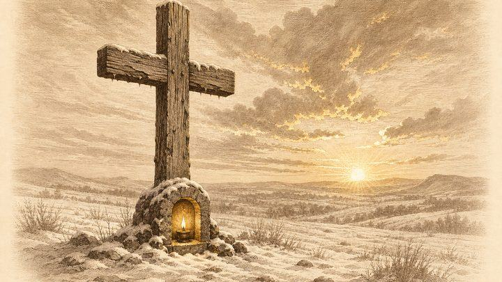
Les nouveaux martyrs de RussieQui furent les martyrs russes du XXe siècle, où ils ont souffert, quand l’Église les a glorifiés, et pourquoi les chrétiens orthodoxes les vénèrent.8 min de lecture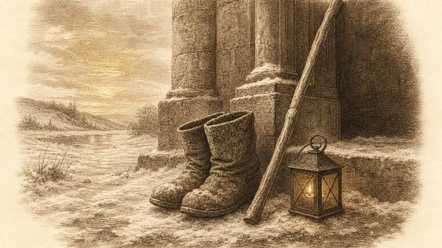
Les fous en Christ et la sainteté simplePourquoi l’Église orthodoxe honore les fous en Christ, en quoi la folie pour le Christ diffère de la maladie mentale, et pourquoi la vraie sainteté paraît si souvent ordinaire.8 min de lectureRepentir, humilité et Providence
Comment une personne déchue est relevée, ce qu'est l'humilité, et s'il existe quelque chose comme le hasard.
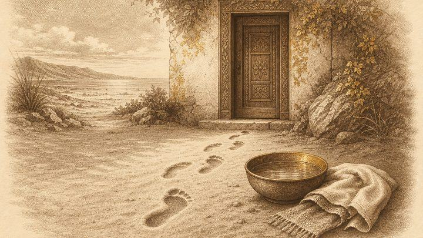
L’humilité dans l’orthodoxieCe qu’est vraiment l’humilité orthodoxe, ce qu’en disent les Pères, comment la distinguer de la fausse humilité, et sept manières simples de la pratiquer.8 min de lecture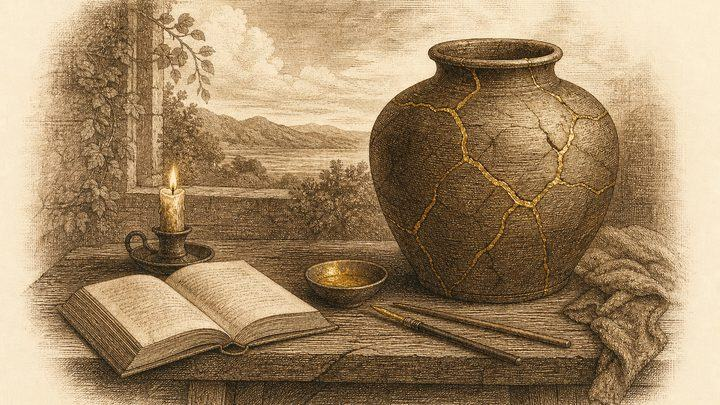
Repentir après un péché graveCe que dit l’enseignement orthodoxe sur le repentir après un péché grave : exemples scripturaires, pénitence comme remède, clergé, désespoir et premiers pas concrets.8 min de lecture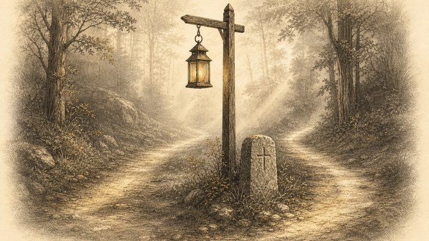
Providence et coïncidenceComment les chrétiens orthodoxes comprennent la providence de Dieu, le libre arbitre et les prétendues coïncidences, et pourquoi l’Église invite à la confiance sans sur-interpréter les événements.8 min de lectureLe point de départ
Qui était le père Séraphim Rose, dans quel esprit ces pages sont écrites, et pourquoi la question de la vérité mérite d'être posée.
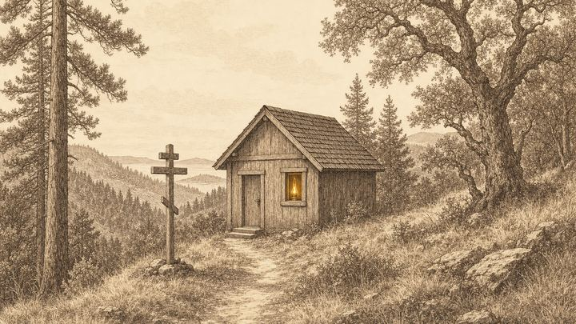
Qui était le père Séraphim Rose ?Un Californien qui perdit la religion dans laquelle il avait été élevé, étudia la philosophie chinoise, entra par curiosité dans une église russe et mourut hiéromoine au fond des bois.9 min de lecture Le père Séraphim Rose contre la dureté religieuseIl tenait sans l'adoucir la revendication exclusive de l'Église orthodoxe, et a passé ses dernières années à soutenir que les chrétiens qui l'énoncent cruellement sont spirituellement dans l'erreur.10 min de lecture
Le père Séraphim Rose contre la dureté religieuseIl tenait sans l'adoucir la revendication exclusive de l'Église orthodoxe, et a passé ses dernières années à soutenir que les chrétiens qui l'énoncent cruellement sont spirituellement dans l'erreur.10 min de lecture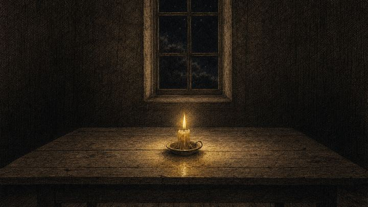
Le nihilisme et la question de la véritéSon livre le plus ardu ne parle pas de méchants. Il parle de la façon dont une civilisation cesse de croire que quoi que ce soit est vrai, écrit par un homme qui avait lui-même cessé d'y croire.10 min de lectureÉcriture, Tradition et autorité
Où se garde la foi chrétienne, qui a reconnu le canon biblique, et comment l'Église le lit.
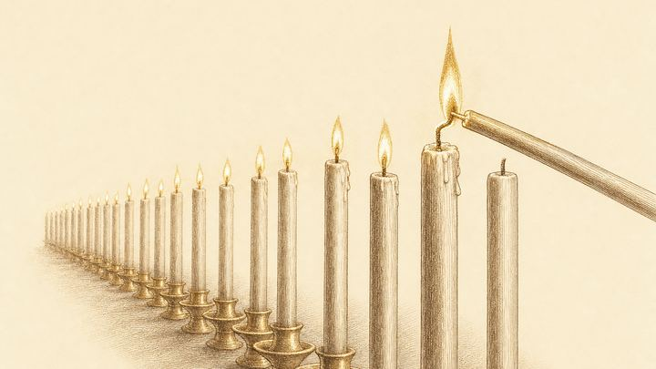
La succession apostolique, et pourquoi elle compteL'imposition ininterrompue des mains n'est ni une chaîne magique ni une garantie de sainteté. Voici ce que l'orthodoxie croit qu'elle transmet réellement.9 min de lecture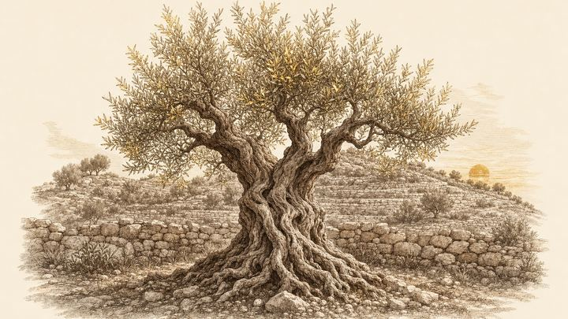
La doctrine se développe-t-elle ou est-elle gardée ?L'orthodoxie dit que la foi est gardée plutôt qu'améliorée. Mais l'Église a bien forgé des mots nouveaux, et le texte classique de la Tradition admet une croissance.9 min de lectureLa vie sacramentelle
Le baptême, l'eucharistie, la confession, les icônes et le jeûne : ce que les orthodoxes croient qui s'y accomplit.
 Ce qui se passe lors d'un baptême orthodoxeTrois immersions, une renonciation, un retournement vers l'orient, et l'affirmation que quelque chose de réel est fait à la personne qui se tient dans l'eau.9 min de lecture
Ce qui se passe lors d'un baptême orthodoxeTrois immersions, une renonciation, un retournement vers l'orient, et l'affirmation que quelque chose de réel est fait à la personne qui se tient dans l'eau.9 min de lecture L'Eucharistie : la présence réelle sans explicationL'Église orthodoxe dit que le pain et le vin deviennent vraiment le Corps et le Sang du Christ, puis se refuse à dire par quel mécanisme.9 min de lecture
L'Eucharistie : la présence réelle sans explicationL'Église orthodoxe dit que le pain et le vin deviennent vraiment le Corps et le Sang du Christ, puis se refuse à dire par quel mécanisme.9 min de lecture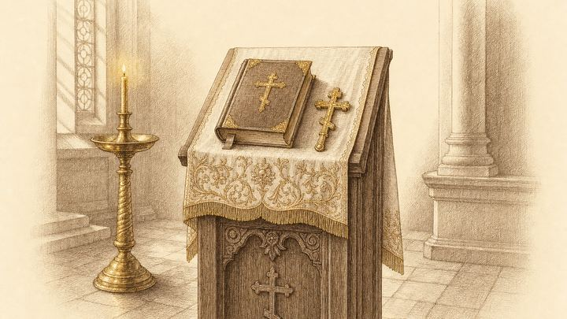
Pourquoi confesser ses péchés à un prêtre ?La confession orthodoxe tient davantage de la visite chez le médecin que de la comparution en justice, et le prêtre qui se tient à côté de vous est un témoin, non un juge.9 min de lectureLa chrismation : sceau du don de l'Esprit SaintL'onction qui suit le baptême sans aucune pause, l'huile parfumée qu'un patriarche consacre, et la porte par laquelle entrent la plupart des convertis à l'Église orthodoxe.9 min de lecture Pourquoi les chrétiens orthodoxes jeûnent encoreQuatre carêmes, deux jours par semaine, et une chose à dire nettement dès le départ : personne n'achète quoi que ce soit à Dieu.9 min de lecture
Pourquoi les chrétiens orthodoxes jeûnent encoreQuatre carêmes, deux jours par semaine, et une chose à dire nettement dès le départ : personne n'achète quoi que ce soit à Dieu.9 min de lectureLa Mère de Dieu et les saints
Vénération et adoration, demander la prière, les reliques, et une seule Église des deux côtés de la mort.
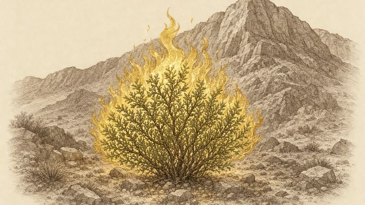
Pourquoi les orthodoxes honorent la Mère de DieuLe titre de Théotokos a été défini pour protéger la vérité sur le Christ ; l'honneur que les orthodoxes rendent à sa mère en découle, et s'arrête avant l'adoration.9 min de lecture Demander aux saints de prier pour nousL'objection de l'unique médiateur est le meilleur argument contre cette pratique, et elle mérite une vraie réponse plutôt qu'un haussement d'épaules.9 min de lecture
Demander aux saints de prier pour nousL'objection de l'unique médiateur est le meilleur argument contre cette pratique, et elle mérite une vraie réponse plutôt qu'un haussement d'épaules.9 min de lecture Pourquoi les orthodoxes vénèrent les reliquesTout autel orthodoxe renferme l'ossement d'un martyr. Voici le raisonnement qui sous-tend une pratique que la plupart des visiteurs protestants trouvent réellement étrange.9 min de lecture
Pourquoi les orthodoxes vénèrent les reliquesTout autel orthodoxe renferme l'ossement d'un martyr. Voici le raisonnement qui sous-tend une pratique que la plupart des visiteurs protestants trouvent réellement étrange.9 min de lecture La communion des saints, expliquéeSi l'Église est un seul corps et que la mort ne le démembre pas, il s'ensuit beaucoup de choses pour la manière dont les chrétiens prient et dont ils portent le deuil.9 min de lecture
La communion des saints, expliquéeSi l'Église est un seul corps et que la mort ne le démembre pas, il s'ensuit beaucoup de choses pour la manière dont les chrétiens prient et dont ils portent le deuil.9 min de lectureL'âme après la mort
Ce que l'orthodoxie dit, et ce qu'elle se refuse à dire, de ce qui attend au-delà de la mort.
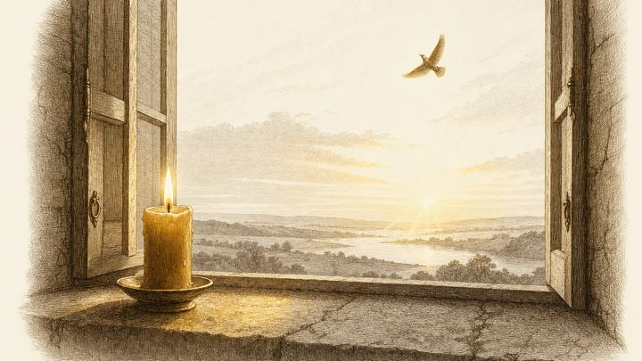
Ce qui arrive à l'âme après la mort dans l'orthodoxieL'Église orthodoxe en dit long sur les premiers jours de l'âme, et elle le dit avec une réserve qui fait partie de l'enseignement au lieu d'en être l'excuse.9 min de lectureLes douanes aériennes, expliquéesUn enseignement orthodoxe ancien et largement attesté, souvent mal compris dans les deux sens, et objet d'un véritable désaccord entre auteurs orthodoxes.10 min de lecture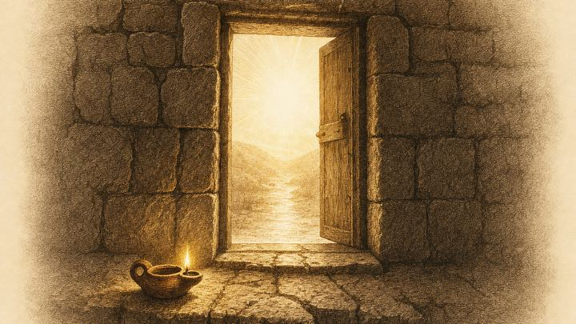
Les expériences de mort imminente : une lecture orthodoxeL'orthodoxie ne rejette pas ces expériences et n'y voit pas des cartes du monde à venir ; elle leur pose une autre question.9 min de lecture Pourquoi les orthodoxes prient pour les mortsUn guide de la panikhide, des quarante jours, de la Radonitsa et des samedis des défunts, de l'origine de cette pratique, et des raisons pour lesquelles beaucoup de chrétiens ne la partagent pas.8 min de lecture
Pourquoi les orthodoxes prient pour les mortsUn guide de la panikhide, des quarante jours, de la Radonitsa et des samedis des défunts, de l'origine de cette pratique, et des raisons pour lesquelles beaucoup de chrétiens ne la partagent pas.8 min de lecture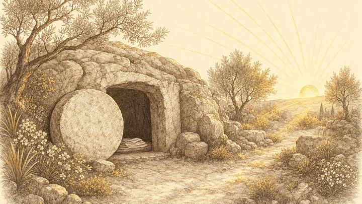
Les deux jugements dans l'enseignement orthodoxeCe que l'orthodoxie tient pour réglé quand une personne meurt, ce qui attend la résurrection générale, et pourquoi l'intervalle n'est ni une seconde chance ni un purgatoire.9 min de lecture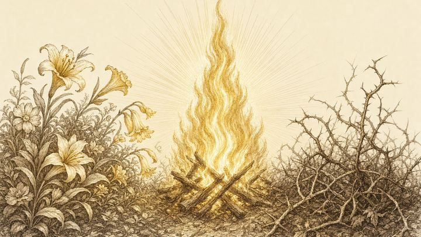
Le ciel et l'enfer comme relation, non comme lieuLes Pères parlent d'un seul amour divin, reçu comme lumière par ceux qui en sont venus à le vouloir, et subi comme feu par ceux qui ne l'ont pas voulu.9 min de lectureLa foi dans le monde moderne
L'expérience spirituelle et son discernement, le sens de l'œcuménisme, et le chemin du chercheur vers l'Orient.
 L'illusion spirituelle : ce que les Pères appellent prélestOn enseigne aux orthodoxes à se défier de leurs propres expériences spirituelles avant de se défier de celles d'autrui, et il existe un vieux mot pour dire pourquoi.9 min de lectureCe que le mot œcuménisme a réellement voulu direUn seul mot a porté au moins trois projets différents, et la plupart des disputes à son sujet opposent des gens qui l'emploient en des sens différents.10 min de lectureLes religions orientales et le chercheur occidentalAvant d'être moine dans une forêt de Californie, Eugene Rose a lu les sages chinois dans leur propre langue — et c'est pourquoi son verdict ultérieur a du poids.9 min de lecture
L'illusion spirituelle : ce que les Pères appellent prélestOn enseigne aux orthodoxes à se défier de leurs propres expériences spirituelles avant de se défier de celles d'autrui, et il existe un vieux mot pour dire pourquoi.9 min de lectureCe que le mot œcuménisme a réellement voulu direUn seul mot a porté au moins trois projets différents, et la plupart des disputes à son sujet opposent des gens qui l'emploient en des sens différents.10 min de lectureLes religions orientales et le chercheur occidentalAvant d'être moine dans une forêt de Californie, Eugene Rose a lu les sages chinois dans leur propre langue — et c'est pourquoi son verdict ultérieur a du poids.9 min de lecture Le discernement des esprits : éprouver l'expérienceLes Pères tenaient pour acquis que des gens sincères se trompent régulièrement sur leurs propres expériences spirituelles, et ils ont laissé un moyen de vérifier.9 min de lecture
Le discernement des esprits : éprouver l'expérienceLes Pères tenaient pour acquis que des gens sincères se trompent régulièrement sur leurs propres expériences spirituelles, et ils ont laissé un moyen de vérifier.9 min de lectureLa paroisse loue ses locaux et ne reçoit aucune subvention publique. Il faut environ S$18,000 par mois pour le loyer et les frais de fonctionnement. Si ces pages vous ont été utiles, songez à aider à les maintenir, et avec elles la paroisse.
Soutenir la paroisse